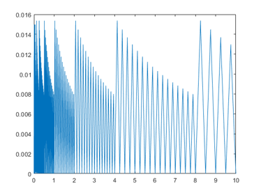
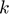

DEMOFL A demonstration of fl-numbers: k-bit arithmetic
Contents
- Initialization
- Comparison to IEEE754 single precision
- Rounding into k bits
- The relative rounding error unit
- Basic operations
- Output format
- Checking theorems in k-bit arithmetic I
- Checking theorems in k-bit arithmetic II
- Predecessor and successor
- Vector and matrix operations
- Sparse matrices
- Matrix routines
- Doubled precision accumulation of dot products
- Mixed precisions
- Operator precedence
- Interval operations
- Interval vectors and matrices
- Specification of intervals
- Directed rounding
- Mixing precision and double rounding
- Enjoy INTLAB
Initialization
Recently we published some papers showing that in the famous Wilkinson estimates factors gamma_n can often be replaced by n*eps. For testing purposes, the fl-package simulates IEEE 754 k-bit arithmetic including over- and underflow, exceptional values, directed rounding and alike.
To work, for example, with k bits precision and exponent range -E+1 ... E use
k = 5; E = 20; flinit(k,E);
The precision and the exponent range are limited to
1 <= prec <= 26 and 1 <= expBias <= 484
in order to achieve high performance of all operations. To retrieve the current setting of precision and exponent range use
flinit
fl-format set to 5 mantissa bits incl. impl. 1 and exponent range -19 .. 20 for normalized fl-numbers
Comparison to IEEE754 single precision
Using flinit(24,127), the set of fl-numbers is identical to IEEE754 single precision. However, library routines in Matlab may use a different order to compute, for example, dot products, so that results in single and fl-arithmetic may be different. Consider
flinit(24,127); % same as IEEE754 single precision x = single(randn(1000,1)); % random single precision vector all(x == fl(x)) % verifies that x is exactly representable in k bit s = x'*x % dot product in single precision t = fl(x)'*fl(x) % dot product in k-bit precision s-t % difference of results
ans = logical 1 s = single 1.1002e+03 fl-type t = +1.00010011000011001011101 * 2^10 fl-type ans = +1.00000000000000000000000 * 2^-12
Obviously the results computed in single precision and the fl-package do not coincide. This is due to a Matlab library routine to compute the dot product x'*x. Computed in a loop, the result by single precision and the fl-package are identical. To verify see
s_loop = single(0); for i=1:1000 % dot product x'*x by conventional loop s_loop = s_loop + x(i)*x(i); end s_loop - s % difference to Matlab library routine s_loop - t % difference to fl-package
ans = single -2.4414e-04 fl-type ans = +0.00000000000000000000000
Rounding into k bits
The function 'fl' rounds a given double precision number into the current format and/or into a specified precision; the function 'double' is a typecast into double precision. Since fl-numbers are always a subset of IEEE754 double precision numbers, a typecast is always error-free.
flinit(5,20); x = fl(32) y = fl(33) double([x y]) [z,exact] = fl([32 33])
fl-type x =
+1.0000 * 2^5
fl-type y =
+1.0000 * 2^5
ans =
32 32
fl-type z =
+1.0000 * 2^5 +1.0000 * 2^5
exact =
1×2 logical array
1 0
Here x=32 is representable in a single bit, so no rounding error occurs, but 33 needs 6 bits to be stored. Rounding tie to even produces the result y=32 in 5 bits. The second parameter 'exact' is (componentwise) 1 if no rounding error occured. It offers a simple possibility to check whether a double number fits into k bits.
The relative rounding error unit
Mathematically, the relative rounding error unit for k-bit arithmetic is 2^(-k), that is the maximal relative error when rounding a real number into the fl-format. However, it is known that just above a power of 2 the relative error is larger, and just below it is smaller.
x = linspace(0,10,100000); X = fl(x); close plot(x,relerr(x,X))
Basic operations
The four basic operations are executed as usual, for example
x = fl(11) y = fl(3) z = x*y t = (-sqrt(y) + 1/y)*(1:3)
fl-type x = +1.0110 * 2^3 fl-type y = +1.1000 * 2^1 fl-type z = +1.0000 * 2^5 fl-type t = -1.0111 * 2^0 -1.0111 * 2^1 -1.0001 * 2^2
Output format
Often it is useful to see the bit pattern, the default for fl-numbers. To switch to ordinary display as a double precision number use
flinit('DisplayDouble')
z
===> Display fl-variables as doubles
fl-type z =
32
The bit representation of fl-numbers and double numbers can be displayed directly by
d = 11 x = fl(d) getbits(d) getbits(x)
d =
11
fl-type x =
11
ans =
' +1.0110000000000000000000000000000000000000000000000000 * 2^3'
ans =
' +1.0110 * 2^3'
The display may be restricted to m bits as well:
m = 10 getbits(d,m)
m =
10
ans =
' +1.011000000 * 2^3'
Checking theorems in k-bit arithmetic I
As a basis for this toolbox we showed in
(*) S.M. Rump: IEEE754 -bit arithmetic inherited by double precision, ACM TOMS, 43(3), 2017
that for fl-numbers A,B in k-bit precision and m>=2k there is no double rounding when first computing the quotient in m-bits and then round the result into k-bits. That means
fl_k(A/B) = fl_k(fl_m(A/B))
We test that by checking all pairs of fl-numbers in [1,2), see "help flsequence".
k = 12; flinit(k,100); m = 2*k; tic A = flsequence(1,pred(2)); % all fl-numbers in [1,2) for i=1:length(A) B = A(i); index = find( flround(A/B,k) ~= flround( flround(A/B,m) , k ) ); if any(index) Aindex = A(index) B end end t = toc
t =
1.4699
Note that this is not a rigorous proof because there may be a double rounding in the computation of flround(A/B,m) and flround(A/B,k) because A/B is computed in double precision. There is a chicken-egg problem: If the statement is true, then it is proved since 53>=m>=k. Note that not writing the above code in vectorized form increases the computing time to more than one hour.
Checking theorems in k-bit arithmetic II
In p-precision floating-point arithmetic the true result of an operation op is rounded to the nearest p-precision number. Usually the relative error is bounded by u=2^(-p), the relative rounding error unit. It has been noted in that this can be improved into
|fl(a op b) - ( a op b)| <= u/(1+u)|a op b| .
It is easy to see that the improved bound is attained if and only if, up to scaling, the true result a op b is equal to 1+u. For addition this is easy to achieve, but what about multiplication?
As shown in
C.-P. Jeannerod and S.M. Rump: On relative errors of floating-point operations: Optimal bounds and applications. to appear in Math. Comp., 2017
that the estimate is sharp if and only if 2^p+1 is prime, i.e. it is a Fermat prime. For that it is necessary that p=2^k is a power of 2, and up to now only five Fermat primes are known for k in {0,1,2,3,4} corresponding to 2^p+1 in {3,5,17,257,65537}. That means the only exceptional precisions p we know of for which the estimate is not sharp are p in {1,2,4,8,16}.
We might want to check the theorem by the following code
flinit('DisplayBits') setround(0) tic for k=0:5 if k==5 p = 10; else p = 2^k; end flinit(p,100); x = flsequence(1,2)'; y = fl((1+2^(-p))./double(x)); index = find( double(x).*double(y) == 1+2^(-p) ); if any(index) disp(['precision ' int2str(p) ' bits: examples for sharp estimate:']) examples = fl([x(index) y(index)]) else disp(['precision ' int2str(p) ' bits: estimate is never sharp']) end end toc
===> Display fl-variables by bit representation precision 1 bits: estimate is never sharp precision 2 bits: estimate is never sharp precision 4 bits: estimate is never sharp precision 8 bits: estimate is never sharp precision 16 bits: estimate is never sharp precision 10 bits: examples for sharp estimate: fl-type examples = +1.010000000 * 2^0 +1.100110100 * 2^-1 +1.010010000 * 2^0 +1.100100000 * 2^-1 +1.100100000 * 2^0 +1.010010000 * 2^-1 +1.100110100 * 2^0 +1.010000000 * 2^-1 Elapsed time is 0.012698 seconds.
The last case p=10 is only for check.
Predecessor and successor
A sequence of consecutive k-bit fl-numbers may computed by
flinit(12,100);
flinit('DisplayDouble');
x = fl(32)
[ pred(x) x succ(x) succ(x,2) ]
===> Display fl-variables as doubles
fl-type x =
32
fl-type ans =
31.9922 32.0000 32.0156 32.0313
Vector and matrix operations
Vector and matrix operations are supported as well, for example
A = fl(reshape(1:16,4,4)) A + 25
fl-type A =
1 5 9 13
2 6 10 14
3 7 11 15
4 8 12 16
fl-type ans =
26 30 34 38
27 31 35 39
28 32 36 40
29 33 37 41
Sparse matrices
Sparse vectors and matrices of fl-numbers as well as fl-intervals are specified as usual.
n = 4; A = fl(band(circulant(1:n),1,2)) S = sparse(A) [I,J] = find(S); IJ = [ I' ; J' ] is_sp = issparse(S) nnzS = nnz(S) [p,q] = bandwidth(S)
fl-type A =
1 2 3 0
4 1 2 3
0 4 1 2
0 0 4 1
fl-type S =
(1,1) 1
(2,1) 4
(1,2) 2
(2,2) 1
(3,2) 4
(1,3) 3
(2,3) 2
(3,3) 1
(4,3) 4
(2,4) 3
(3,4) 2
(4,4) 1
IJ =
1 2 1 2 3 1 2 3 4 2 3 4
1 1 2 2 2 3 3 3 3 4 4 4
is_sp =
logical
1
nnzS =
12
p =
1
q =
2
Matrix routines
Many of the usual operations for full and sparse matrices are avaliable in k-bit arithmetic.
t = trace(S) D = diag(S,-1)
fl-type t = (1,1) 4 fl-type D = (1,1) 4 (2,1) 4 (3,1) 4
The display routines for double intervals apply to fl-interval quantities as well.
T = tril(intval(A)) intvalinit('DisplayInfSup') T intvalinit('DisplayMidRad') T
fl-type intval T =
1.0000 0.0000 0.0000 0.0000
4.0000 1.0000 0.0000 0.0000
0.0000 4.0000 1.0000 0.0000
0.0000 0.0000 4.0000 1.0000
===> Default display of intervals by infimum/supremum (e.g. [ 3.14 , 3.15 ])
fl-type intval T =
[ 1.0000, 1.0000] [ 0.0000, 0.0000] [ 0.0000, 0.0000] [ 0.0000, 0.0000]
[ 4.0000, 4.0000] [ 1.0000, 1.0000] [ 0.0000, 0.0000] [ 0.0000, 0.0000]
[ 0.0000, 0.0000] [ 4.0000, 4.0000] [ 1.0000, 1.0000] [ 0.0000, 0.0000]
[ 0.0000, 0.0000] [ 0.0000, 0.0000] [ 4.0000, 4.0000] [ 1.0000, 1.0000]
===> Default display of intervals by midpoint/radius (e.g. < 3.14 , 0.01 >)
fl-type intval T =
< 1.0000, 0.0000> < 0.0000, 0.0000> < 0.0000, 0.0000> < 0.0000, 0.0000>
< 4.0000, 0.0000> < 1.0000, 0.0000> < 0.0000, 0.0000> < 0.0000, 0.0000>
< 0.0000, 0.0000> < 4.0000, 0.0000> < 1.0000, 0.0000> < 0.0000, 0.0000>
< 0.0000, 0.0000> < 0.0000, 0.0000> < 4.0000, 0.0000> < 1.0000, 0.0000>
Doubled precision accumulation of dot products
The difference between double precision computations and k-bit precision can be explored. The default for matrix products is accumulation of dot products in working precision to simulate k-bit precision for all operations. For summation and dot products, doubled precision accumulation is possible.
The following generates some Toeplitz matrix and computes a residual in double and in 24-bit precision.
flinit(12,100)
flinit('AccumulateDouble')
n = 4;
A = toeplitz(1:n)
Ainv = inv(A)
resdble = eye(n) - A*Ainv
resfl_24 = eye(n) - fl(A)*fl(Ainv)
ans =
'Initialization of fl-format to 12 mantissa bits incl. impl. 1 and exponent range -99 .. 100 for normalized fl-numbers'
===> fl-accumulation precision double the working precision
A =
1 2 3 4
2 1 2 3
3 2 1 2
4 3 2 1
Ainv =
-0.4000 0.5000 0.0000 0.1000
0.5000 -1.0000 0.5000 0.0000
0.0000 0.5000 -1.0000 0.5000
0.1000 0.0000 0.5000 -0.4000
resdble =
1.0e-15 *
0 -0.1480 -0.2220 -0.2220
-0.1665 0.2220 -0.2220 0
-0.0555 0.0370 0.1110 -0.1110
-0.1665 0.0740 -0.1665 0
fl-type resfl_24 =
1.0e-04 *
0 -0.0000 0 0.9155
0.3052 0 0 0.6104
0.6104 -0.0000 0 0.3052
0.9155 -0.0000 0 0
Note that using fl(eye(n)) in the last statement would not change the result because 1 and 0 is exactly representable in any k-bit precision.
The same computation with k-bit precision accumulation of dot products is as follows:
flinit('AccumulateSingle')
resfl_12 = eye(n) - fl(A)*fl(Ainv)
===> fl-accumulation in working precision
fl-type resfl_12 =
1.0e-03 *
0 -0.0000 0 0
0 0 0 0
0.1831 -0.0000 0 0
0.0916 -0.0000 0 0
As may be expected, some components are better, some are worse.
Mixed precisions
Mixed operations between fl-numbers and single or double numbers are first executed and then rounded. This is unambiguous if the double number is exactly representable in the specified k-bit precision. However, consider
flinit(5,100); x = fl(33)/fl(11) y = 33/fl(11)
fl-type x =
2.8750
fl-type y =
3
Here fl(11)=11, so y is exactly equal to 3=fl(3), but fl(33)=32 so that x is not equal to y. The same happens for comparison:
fl(32) < fl(33) fl(32) == fl(33) fl(32) == 33
ans = logical 0 ans = logical 1 ans = logical 0
For safety reasons, a warning is given when a newly specified format does not cover all quantities of the old fl-format. Special caution is necessary when mixing precisions.
Operator precedence
As usual, Matlab follows strictly the operator concept, and in particular the precedence of operators. Therefore special care is necessary when using mixed precisions. Consider
x = 3 * 11 + fl(1) y = fl(3) * 11 + 1
fl-type x =
34
fl-type y =
32
Here first 3*11 is executed in double precision in the computation of x, whereas the computation of y consists only of fl-number operations.
Interval operations
Intervals with fl-number as endpoints are supported as well. For example,
format infsup
x = infsup(fl(1),2)
3*x - 1
x/3
fl-type intval x = [ 1.0000, 2.0000] fl-type intval ans = [ 2.0000, 5.0000] fl-type intval ans = [ 0.3281, 0.6876]
The syntax and semantic is as for intervals with double precision endpoints, rounding is always outwards.
z = fl(infsup(32,33))
fl-type intval z = [ 32.0000, 34.0000]
Interval vectors and matrices
Again interval vectors and matrices of fl-numbers as well as the operation between those are as usual.
n = 4;
intvalinit('Display_')
flinit(12,99)
A = midrad(fl(randn(n)),1e-3)
P = A*intval(A')
C = compmat(A)
===> Default display of intervals with uncertainty (e.g. 3.14_), changed
to inf/sup or mid/rad if input too wide ans =
'Initialization of fl-format to 12 mantissa bits incl. impl. 1 and exponent range -98 .. 99 for normalized fl-numbers'
fl-type intval A =
[ -0.0937, -0.0916] [ 1.4609, 1.4639] [ -0.0126, -0.0105] [ 0.2658, 0.2681]
[ 1.9326, 1.9356] [ 0.5903, 0.5928] [ -1.6236, -1.6206] [ 0.0693, 0.0714]
[ -1.3121, -1.3090] [ -1.5127, -1.5097] [ 0.1056, 0.1077] [ -0.7754, -0.7729]
[ -1.3018, -1.2988] [ -0.6644, -0.6618] [ -0.4126, -0.4104] [ -0.0047, -0.0026]
fl-type intval P =
2.22__ 0.7___ -2.3___ -0.8___
0.7___ 6.7___ -3.7___ -2.2___
-2.3___ -3.7___ 4.6___ 2.7___
-0.8___ -2.2___ 2.7___ 2.30__
C =
0.0916 -1.4639 -0.0125 -0.2681
-1.9355 0.5903 -1.6235 -0.0714
-1.3120 -1.5127 0.1057 -0.7754
-1.3018 -0.6643 -0.4126 0.0026
Note that by definition Ostrowski's comparison matrix is a point matrix.
Specification of intervals
There are many ways to produce the narrowest interval with k-bit endpoints including 0.1:
flinit('DisplayBits') x1 = fl(intval(1)/10); x2 = fl(intval('0.1')); x3 = midrad(0.1,realmin); [ x1 x2 x3 ]'
===> Display fl-variables by bit representation fl-type intval ans = [ +1.10011001100 * 2^-4 , +1.10011001101 * 2^-4 ] [ +1.10011001100 * 2^-4 , +1.10011001101 * 2^-4 ] [ +1.10011001100 * 2^-4 , +1.10011001101 * 2^-4 ]
Note that x3 is correct because first the interval midrad(0.1,realmin) with double precision endpoints is computed, then it is rounded into the specified k-bit precision.
Directed rounding
All operations and in particular a type cast from double into fl-numbers respect the current rounding mode. For example,
setround(1) % rounding upwards
32 + fl(1)
x = fl(33)
setround(0)
fl-type ans = +1.00001000000 * 2^5 fl-type x = +1.00001000000 * 2^5
Mixing precision and double rounding
The function flround(d,k) rounds d, a double number or interval, into k-bit precision, see help flround.
Concerning double rounding of the square root, I proved in the mentioned paper (*) the following. Suppose the square root of a k-bit number X is first rounded into m bits with result g, and then g is rounded into k bits, then this is equal to rounding the square root of X directly into k bits provided m>=2k+2. Moreover, for m=2k+1 there is exactly one counterexample to that statement namely, up to scaling, the predecessor of 2. For k=12 this is checked as follows:
k = 12; flinit(k,100); tic X = flsequence(1,pred(4)); % All k-bit fl-numbers in [1,4) sizeX = size(X) for m=(2*k+1):(2*k+2) m sqrtX = sqrt(double(X)); g = flround(sqrtX,m); index = find( flround(sqrtX,k)~=flround(g,k) ); if any(index) getbits(X(index),k) % prints counterexample else disp('no counterexample') end end toc
sizeX =
1 4096
m =
25
ans =
' +1.11111111111 * 2^1'
m =
26
no counterexample
Elapsed time is 0.006158 seconds.
It may be a hint, but this is not quite a proof of correctness; even not for k=12 because in flround(sqrtX,k) or the computation of g a double rounding might have occured.
Enjoy INTLAB
INTLAB was designed and written by S.M. Rump, head of the Institute for Reliable Computing, Hamburg University of Technology. Suggestions are always welcome to rump (at) tuhh.de